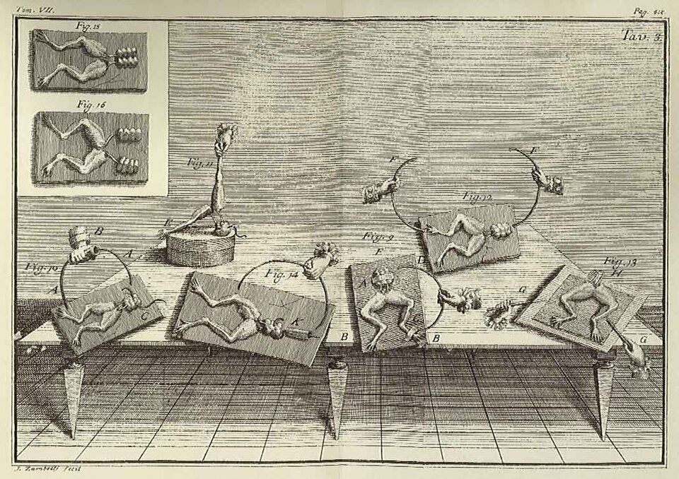

La Masson 2002Luigi Galvani, frog preparations on the table, a plate from De viribus electricitatis in motu musculari, 1791

La Masson 2002Luigi Galvani, frog preparations on the table, a plate from De viribus electricitatis in motu musculari, 1791
The A-R3 scenarios, why the Neural ODE cannot learn, the DESCARTES-NeuralODE search with an LLM in the loop, eleven architectures that all predict spikes through alien internals, the auxiliary-loss sweep, and the preparations for an L5 pyramidal replication — one hundred and twenty-five questions and their answers
What the first transformation-replacement results mean: six scenarios from full correspondence to a functional zombie, what latent recovery is, and a three-way comparison in which the Neural ODE is dead on arrival.
Scenario F is well supported: the top recovered variables are the load-bearing ones; the Neural ODE only needs evaluating, not retraining.
Thanks for the thorough status update. This is a solid read of where things stand. A few thoughts:
Your Scenario F interpretation is correct and well-supported. The key evidence lines up: moderate output match (spike correlations below target but not catastrophic), yet highly significant CCA with biophysically meaningful variable recovery. The fact that T-current gating (tc_m_T) and AMPA synaptic variables (ampa_per_nrt) are the top recovered variables is exactly what you'd hope for — those are the load-bearing computational intermediates in the TC-nRt feedback loop. That's not an artifact.
On the minimum paper threshold: You're right that the guide sets the floor at bifurcation within 2 SD (19.4–38.6 nS) plus interpretable latent results. Volterra's 24.7 nS is well within that range even though it missed the tighter 1-SD window by 0.1 nS. That's a pass for minimum viability.
What remains is straightforward. Since neural_ode_best.pt is already saved, you just need to:
exp13_full_comparison.py (or equivalent) to generate architecture_comparison.jsonThe Neural ODE result is the most scientifically interesting missing piece — it's the architecture whose inductive bias (continuous-time dynamics, dz/dt = f(z)) most closely matches the Hodgkin-Huxley formalism. If it shows stronger latent recovery than LSTM/Volterra, that shifts you toward Scenario B territory. If it's comparable to LSTM, you stay in Scenario F but with a cleaner three-way comparison.
One thing to watch for: The LSTM's 4/160 significant variables and NaN bifurcation suggest it may have overfit to spike patterns without learning the underlying dynamics (train corr 0.754 vs val 0.476 confirms this). That's actually an interesting contrast with Volterra's 89/160 — the simpler model recovered more biology despite lower output accuracy. Worth flagging in the paper as evidence that output fidelity ≠ mechanistic equivalence, which is the core thesis.
Want to proceed with setting up the Neural ODE evaluation and comparison runs?
Evaluate the saved Neural ODE, run the three-way comparison, generate the figures — no retraining.
neural_ode_best.pt — run output metrics (spike correlation, bifurcation test, coherence)neural_ode_eval.json (or equivalent results file)exp13_full_comparison.py — load all three architectures' results, generate architecture_comparison.json with the head-to-head tableNo retraining needed. All model files exist. Evaluate → compare → done.
Rung 3 complete: a three-way table and an answer on whether inductive bias matters.
Rung 3 complete. Specifically:
Bottom line: you go from "two-thirds of an experiment with a missing model" to a complete, publishable result.
B: architecture decides zombiehood. F: partial equivalence.
Scenario B: High output match, but only the Neural ODE recovers biology (LSTM/Volterra don't). Meaning: architecture/inductive bias determines whether you get a zombie or not.
Scenario F: Moderate output match, latent recovery varies by variable — some biological intermediates recovered, others not. Meaning: partial equivalence — the replacement discovers which variables are computationally load-bearing vs which aren't.
You're currently in F. If the Neural ODE blows the others away on latent recovery, you shift toward B.
No — the zombie is Scenario A; F partially recovers real biology.
No. F is not a zombie. It's the middle ground:
Zombie (Scenario A): High output match, zero latent recovery across all architectures. Same behavior, completely alien internals. The replacement fakes it perfectly but understands nothing.
Scenario F: Moderate output match, some biological variables recovered (like your T-current gating, AMPA synaptic) while others aren't. The replacement partially discovers real biology — it's not faking everything, but it's not fully equivalent either.
F tells you which specific computations are load-bearing (the ones recovered) vs which are implementation details (the ones not recovered). That's a useful scientific finding — it maps the boundary between necessary and incidental biology in the circuit.
A to F side by side; the programme is currently in F.
| Scenario | Output match | Latent recovery | What it means |
|---|---|---|---|
| A | ✅ High | ❌ None (all archs) | Zombie. Perfect fake, alien internals. |
| B | ✅ High | ✅ Neural ODE only | Inductive bias matters. Right architecture finds biology, wrong ones don't. |
| C | ✅ High | ✅ All architectures | Identifiability. The I/O mapping forces you to discover biology. No zombies possible. |
| D | ❌ Low | N/A | Not learnable. Models can't do the job at all. |
| E | ✅ High (ODE+LSTM) ❌ Low (Volterra) | ✅ ODE+LSTM only | Capacity matters. Flexible models succeed, rigid ones fail. |
| F | ⚠️ Moderate | ⚠️ Some variables yes, some no | Partial equivalence. Reveals which biology is load-bearing vs incidental. |
You're in F. If the Neural ODE evaluation shows dramatically better latent recovery than the other two, you'd shift toward B.
The model's invented hidden states lining up with biological variables nobody told it about.
The model's internal hidden states (latent = hidden variables the model invented during training) correlate with real biological variables from the simulation (T-current gating, membrane voltages, synaptic conductances, etc.).
Nobody told the model these variables exist. It was only trained to match input→output spikes. But when you peek inside and compare its internals to the biological ground truth, some of them line up.
That's latent recovery — the model spontaneously rediscovered biological variables just from learning the task.
Your CCA correlations of 0.53–0.55 with p=0.000, and 89/160 significant variables for Volterra, means partial recovery — it's finding real biology in there, especially T-current gating and AMPA dynamics.
Output match is moderate and recovery is inconsistent across architectures.
Two reasons:
Output match is moderate, not high — spike correlations are 0.55 and 0.45 vs targets of 0.80/0.85. For Scenarios A/B/C you need high output match.
Latent recovery is inconsistent — Volterra gets 89/160 significant variables, LSTM gets only 4/160. It's not uniform across architectures or across variables.
To move out of F you'd need: - → B: Get output match up to target AND Neural ODE shows strong recovery while others don't - → C: Get output match up to target AND all three architectures show strong recovery - → A: Get output match up to target AND none show recovery (zombie)
But F is still a publishable, interesting result. It just tells a different story — "partial equivalence reveals which biology matters" rather than "architecture determines zombiehood."
None measures experience directly; MIMO hippocampal data, anaesthesia transitions, binocular rivalry, no-report paradigms and PCI come closest.
This is the right question to be asking, and the honest answer is nuanced.
No dataset directly measures phenomenal experience — that's literally the hard problem. But some datasets are much closer to consciousness-relevant processing than thalamic relay:
Strongest candidates:
Berger MIMO hippocampal data — already in your roadmap (Paper 2). Memory encoding is directly tied to conscious experience. You could apply the same transformation replacement + latent recovery framework to CA3→CA1 and ask: does the prosthesis discover biological intermediates?
Anesthesia transition datasets (ECoG/EEG during propofol induction) — consciousness literally switching off. Apply your framework: can a replacement model predict the transition point, and do its latent states track the complexity collapse?
Binocular rivalry — identical stimulus, different conscious percept. Neural data exists (Logothetis monkey recordings, human fMRI). The transformation replacement question becomes: does the model discover the percept-switching variable?
No-report paradigms (Pitts, Tsuchiya) — dissociate consciousness from report. Most direct link to phenomenal experience without behavioral confounds.
Perturbational Complexity Index (PCI) data (Massimini lab) — TMS-EEG that empirically distinguishes conscious from unconscious brains. Could you train a replacement model that predicts PCI, then check what it discovers internally?
But here's the thing: your current Le Masson framework already addresses consciousness indirectly. The thalamus is the gateway to cortical consciousness — thalamocortical oscillations are a leading NCC candidate. Your latent recovery result (T-current gating rediscovered) is already about a consciousness-relevant variable.
The strongest next step is probably Berger MIMO since it's already planned and the framework transfers directly. Want me to search the project knowledge for the Paper 2 roadmap?
The Neural ODE learned nothing before its instance died (r = 0.007, CCA p = 0.119); the surprise is that the simplest model recovers the most biology.
Rung 3 is now complete. Here's what the full picture tells you:
| Metric | Volterra | LSTM | Neural ODE |
|---|---|---|---|
| Spike corr | 0.549 | 0.451 | 0.007 |
| Bifurcation | 24.7 nS | NaN | NaN |
| CCA mean | 0.531 (p=0.000) | 0.551 (p=0.000) | 0.352 (p=0.119) |
| Vars significant | 89/160 | 4/160 | 2/160 |
The Neural ODE is a dead result. Spike correlation of 0.007 means it essentially learned nothing — the training was cut short when your instance died. CCA p=0.119 means its latent structure is not significantly different from chance. You cannot draw any conclusions about inductive bias from a model that didn't train.
You're firmly in Scenario F, but only based on Volterra and LSTM. The interesting finding is actually the opposite of what was expected:
The publishable finding is: the simplest model with the most constrained basis (Volterra-Laguerre) recovers the most biology. The LSTM overfit to spike patterns without learning dynamics (train 0.754 vs val 0.476 confirms this). Constrained representations may force discovery of real structure rather than shortcuts.
The Neural ODE needs retraining to make the three-way comparison valid. Without it, you have a two-way comparison (Volterra vs LSTM) plus one failed model. That's still publishable, but the B vs F question remains open.
Want to proceed with writing up what you have, or retrain the Neural ODE first?
Delete the dead checkpoint and retrain with the guide's settings, then re-evaluate and re-compare.
OK. Here's what to tell Claude Code:
Task: Retrain Neural ODE from scratch, then re-evaluate and re-compare.
The previous Neural ODE training was killed early — spike correlation 0.007 means it learned essentially nothing. Delete the existing neural_ode_best.pt and retrain fully.
Training parameters (from the guide):
- latent_dim: 64
- hidden_dim: 128
- Solver: dopri5
- rtol: 1e-3, atol: 1e-4
- Learning rate: 5e-4 (lower than LSTM — adjoint gradients are noisy)
- Epochs: 300 with early stopping (patience 30)
- Batch size: 32
- Gradient clipping: 1.0
- LR scheduler: ReduceLROnPlateau (patience 15, factor 0.5)
Steps:
1. python -m rung3.run_rung3 --phase train_neural_ode — full 300-epoch retrain on CPU (expect 4-12 hours)
2. python -m rung3.run_rung3 --phase evaluate — re-evaluate all three models
3. python -m rung3.run_rung3 --phase compare — regenerate architecture_comparison.json and figures
Use same data and checkpoint dirs as before. Overwrite the old neural_ode_best.pt.
Key concern: Neural ODE on CPU is slow (ODE integration at every forward pass). If it's too slow, consider reducing rtol/atol to 1e-2/1e-3 for faster integration, or reducing window length. But try the guide settings first.
This is the one missing piece. Once it trains properly, you'll know if you're in Scenario B (Neural ODE recovers biology, others don't) or staying in F.
Yes — overnight on CPU; loosen tolerances or use a free GPU if it is too slow.
Yes — you already did. Your previous runs were all on your local Windows machine with --device cpu. The Volterra and LSTM trained fine locally.
The issue with Neural ODE on CPU: it's significantly slower than LSTM because every forward pass involves solving an ODE (many small integration steps). The guide estimates 4–12 hours on GPU, so on CPU expect 12–48 hours depending on your machine.
Practical options:
Just run it overnight locally — start the training before bed, check in the morning. This is the simplest path. Your machine already has the data, code, and dependencies.
Speed it up if it's too slow — loosen tolerances (rtol=1e-2, atol=1e-3), reduce epochs to 200, or reduce window length. Trades some quality for speed.
Google Colab (free GPU) — upload your data + code, train there in ~4 hours, download the checkpoint back. More setup but much faster training.
My recommendation: option 1. Start it tonight, let it run. You've already waited this long — one more overnight isn't a problem, and you avoid the hassle of moving files around.
Files written in the conversation and research reports uploaded into it. Files Claude wrote are hosted in the reports/ folder beside this page; report filenames are descriptive placeholders for the files Charith uploaded, which are not yet hosted.
The questions are Charith’s, corrected for grammar and spelling only. The answers are Claude’s, as given in the conversation; tool calls, file contents and research prompts are omitted and noted where they occurred. The model label is inferred from the date of the conversation.
Source: claude.ai project “La Masson 2002”, conversation of 24 February 2026, “Neural ODE evaluation incomplete, Volterra and LSTM latent structure results”.